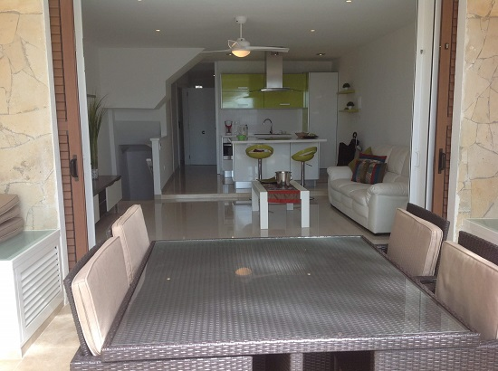
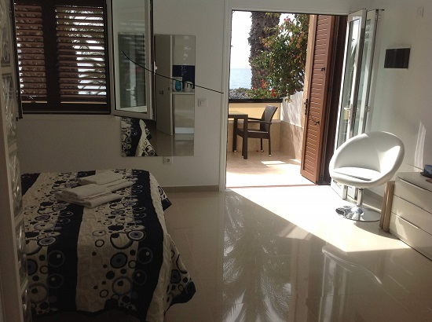
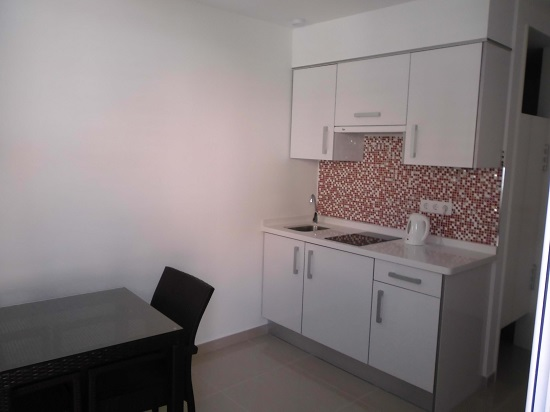
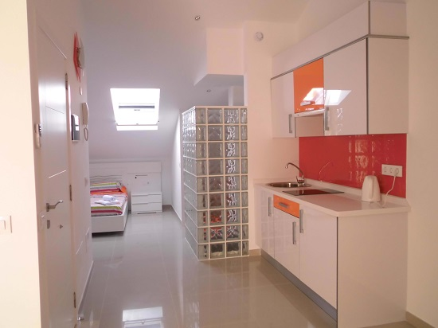

Studio's
Het strandhuisje biedt verschillende faciliteiten en per studio zijn er nog enkele voordelen.
Faciliteiten
Omdat het gehele gebouw in 2014 nog gerenoveerd is zijn alle studio's modern, fris en mooi ingericht.
- wifi in heel het gebouw (niet aan het zwembad),
- lakens en handdoeken zijn daar aanwezig en worden dagelijks ververst,
- elke studio wordt dagelijks gepoetst,
- tv met Belgische en Nederlandse zenders,
- kookgerei en servies,
- koelkast en diepvriezer,
- elke slaapkamer is voorzien van een eigen ventilator,
- voldonede opbergkasten in elke slaapkamer,
- haarddroger op aanvraag.
Studio 1
Studio 1 is gelegen op het gelijkvloers met zeer ruim terras wat uitgeeft rechtstreeks op het strand. Er zijn drie zeer ruime slaapkamers met elk hun eigen badkamer. De living sluit aan op de open moderne keuken. Deze studio is ook voorzien van wasmachine en droogkast. In de keuken is er een vaatwasser en oven.
| Max. aantal personen | 6 |
| Verdieping | Gelijkvloers |
| Aantal slaapkamers | 3 |
| Aantal badkamers | 3 |
| Oppervlakte | 150 m² |
| Prijs per dag | €125 |
| Borgsom | €100 |
Studio 2
Deze studio is gelegen op de eerste verdieping en heeft een groot terras met uitzicht op het strand en gans de baai. U kan hier ook gebruik maken van ontbijttafel en twee strandstoelen.
| Max. aantal personen | 2 |
| Verdieping | 1e verdieping |
| Aantal slaapkamers | 1 |
| Aantal badkamers | 1 |
| Oppervlakte | 50 m² |
| Prijs per dag | €80 |
| Borgsom | €50 |
Studio 3
Deze studio is gelgen op de eerste verdieping, voorzien van balkon en biedt een uitzicht op het complex.
| Max. aantal personen | 2 |
| Verdieping | 1e verdieping |
| Aantal slaapkamers | 1 |
| Aantal badkamers | 1 |
| Oppervlakte | 40 m² |
| Prijs per dag | €50 |
| Borgsom | €50 |
Studio 4
Studio 4 is gelegen op de dakverdieping en heeft een klein terras met uizicht op het strand en de ganse baai. De studio heeft buiten de keuken nog een aparte zithoek.
| Max. aantal personen | 2 |
| Verdieping | 2e verdieping (dak) |
| Aantal slaapkamers | 1 |
| Aantal badkamers | 1 |
| Oppervlakte | 60 m² |
| Prijs per dag | €75 |
| Borgsom | €50 |